Никогда не спите, дети!
Кошмар на улице Вязов
Одним только плох глубокий сон, слишком уж он напоминает смерть.
Мигель де Сервантес «Дон Кихот»
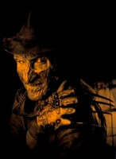
Американский режиссёр Уэс Крэйвен знает толк в страхе. Уже к началу 80-х он был известен как автор нашумевших фильмов ужасов «Болотная тварь» и «У холмов есть глаза». Позже он создаст знаменитый «Крик», обеспечивший рекордные сборы в 170 миллионов долларов.
«Кошмар на улице Вязов» — не первый ужастик в числе детищ Крэйвена (а кроме них, к 1984-му на экраны уже вышли хрестоматийные «Техасская резня бензопилой» и «Пятница 13-е»), но именно эту картину нередко именуют первым настоящим фильмом ужасов в истории.
Раз, два, три, Фредди в гости жди
Группу подростков в одном из предместий Лос-Анджелеса начинают посещать одинаковые кошмары. В снах их преследует чудовище: тощий, покрытый ожогами человек с бритвенными лезвиями на перчатке. И это не совсем обычные кошмары. Не такие, от которых просыпаются с криком. Ребята, которых во сне настигает Фредди, не просыпаются уже никогда.
Кто такой этот Фредди? Фредди Крюгер — маньяк, убийца детей. Зачатый пациентами закрытой лечебницы для опасных безумцев, коллективно изнасиловавшими медицинскую сестру Аманду Крюгер. Уличённый в преступлениях и без всяких судебных проволочек сожженный родителями своих жертв.
И вот Фредди вернулся мстить детям тех, кто его казнил. Избранный им метод нападения и сам способ его существования нетипичны даже для нежити. Как скоро станет ясно, Фредди — вообще не сторонник традиционных решений.
Тем сложнее будет его уничтожить. Пресловутый осиновый кол вонзать не во что. Фредди живет только в снах. А там он неуязвим. Ведь на то он и кошмар, что зло в нём всегда торжествует. Существует лишь одни способ спастись от Фредди — не спать. Но сколько дней подряд может бодрствовать человек?..
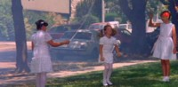
Классическое начало фильмов ужасов: демонстрация сцен мирной и счастливой жизни.
Такой сюжет фильма, что нетипично для жанра «хоррор», был взят автором сценария и режиссёром Уэсом Крэйвеном из... газет. В конце 1970-х годов в США начали прибывать беженцы из Камбоджи, страны, где «застенчивый профессор» Пол Пот за 4 года правления из не вполне ясных соображений уничтожил почти три миллиона своих подданных. Некоторые дети иммигрантов не могли спать — им снились «красные кхмеры». Несмотря на усилия врачей, один за другим они умирали от нервного и физического истощения.
Это была действительно хорошая идея. Зритель может рефлекторно пугаться каких-нибудь аляповато сделанных пауков-мутантов, но он всё-таки не верит в них. Другое дело — кошмар. Кошмары видели все. И все верили в них, пока не просыпались. Во сне возможно всё. Недаром самых ужасных монстров именуют выходцами из кошмаров.
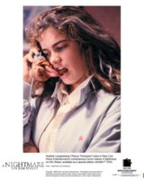
Спецэффекты в «Кошмаре на улице Вязов» были резко ограничены скудностью бюджета. Бутафорский язык, появляющийся из телефонной трубки, и смотрится как бутафорский.
Кроме оригинального сюжета, секрет успеха заключался и в напряжённой, давящей атмосфере фильма, поддержанию которой способствует удачно подобранный саундтрек.
Остальное обеспечили блестящая режиссура и неплохая актёрская работа. Картина стала дебютом многих звёзд — например, Джонни Деппа, самого харизматичного пирата современности. Несмотря на обусловленную сюжетом молодость, герои изображали ужас вполне убедительно, при том что к радикальным методам стимулирования (таким, как стрельба из револьвера над ухом) Крэйвен не прибегал. Режиссёр стремился обходиться минимумом выразительных средств и спецэффектов. Главное — не жалеть бутафорской крови! Крэйвен использовал её две тонны.
Важный элемент успеха фильма — заключённая в сюжете тайна. И в «Кошмаре на улице Вязов» она есть. От первой до последней минуты зритель будет ломать голову над вопросом — а улица Вязов здесь при чём? Такой топоним ни разу не упоминается, да и с определённой улицей действие не связано никак. Эту тайну автор так и оставляет без разгадки.
Но главной находкой стал сам Фредди Крюгер. Крэйвен слепил этот образ из собственных детских страхов. Когда-то его напугал нищий с похожей внешностью, имя же заимствовано у хулигана, отравлявшего Уэсу школьные годы. Завершающими штрихами стали мятая шляпа и найденный на распродаже свитер в красную и зелёную полосы.
Автор видел маньяка ещё более страшным, но здесь предел фантазии положили возможности гримёра. В результате Фредди (в исполнении Роберта Инглунда) сохранил пусть и безобразное, но вполне человеческое лицо.
Это тоже стало находкой. Другие известные в то время широкоэкранные серийные убийцы не имели лиц, они носили маски. И почти никогда ничего не говорили, предпочитая злодействовать молча. Механически и бессмысленно, словно по долгу службы, пёрли напролом, размахивая бензопилами. Все они воспринимались лишь как некая безличная стихийная сила. Смертоносная, а потому устрашающая, но в определённом смысле даже не злая. Ведь зло — не физическая величина, а качество человеческого намерения.
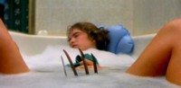
Крэйвен прекрасно справлялся и без спецэффектов. Многие изобретённые им приёмы устрашения в дальнейшем стали классическими.
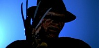
К величайшему огорчению «фанатов» драгоценная реликвия — оригинальная перчатка Фредди, служившая ему оружием в первых двух картинах, — в настоящий момент утрачена.
А Фредди был злым. Он мог и поговорить с жертвой, демонстрируя чувство юмора и растягивая удовольствие от расправы. Да! Он убивал только потому, что это доставляло ему удовольствие. Фредди проявлял изобретательность, опять-таки лишь из любви к искусству. Если до него фильмы о маньяках привлекали зрителя исключительно сценами убийств, то здесь и сам убийца получился интересным и харизматичным.
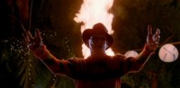
Истинное зло не горит. И не тонет. Даже в святой воде.
Замечательный фильм, тем не менее, имел все шансы не родиться. Сценарий был написан в 1981 году, но в течение трёх лет Уэс Крэйвен не мог найти продюсера. В конце концов финансирование взяла на себя компания New Line Cinema, до того момента фильмов не ставившая, а лишь выступавшая дистрибьютором чужих.
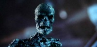 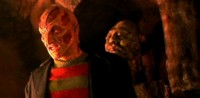
В многочисленных продолжениях постановщики пытались экспериментировать над внешностью Фредди, иногда показывая его без мяса... или даже без шляпы!
Средств было отпущено очень мало — всего 1,8 миллиона долларов. Их не хватало не только на спецэффекты, но и на нормальные декорации и грим. Но и эти деньги поступали нерегулярно. Студия, которой в будущем предстояло снимать «Властелина Колец», балансировала на грани разорения. В любой момент всё могло рухнуть. И даже местами рухнуло. Однажды во время съёмок развалилась целая комната, потух свет и, в довершение разгрома, на группу вылились все запасы бутафорской крови.
Тем более колоссальным стал успех. Появившись на экранах, фильм сразу собрал 26 миллионов долларов, что превысило вложения в 14 раз.
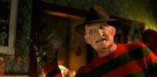 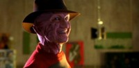
Инглунду удалось создать чем-то даже симпатичное чудовище.
Это интересно
- Инглунд не только прославился в роли Крюгера, но и сам влюбился в созданный им образ и всё, связанное с ним. Поэтому в работу над фильмами цикла погружался с необычайным энтузиазмом.
- Во вторых и пятых «Вязах» Роберт не только играет Фредди, но и появляется в эпизодических ролях без грима.
- К третьим «Вязам» Инглунд даже пытался писать сценарий.
- На первое место в титрах фамилия Инглунда переместилась только в четвёртой картине. До этого Фредди не считался главным героем.
Фредди жив!
Успех «Кошмара на улице Вязов», особенно ошеломляющий при сравнении прибыли и затрат, сразу же стал легендой Голливуда. Благодаря Фредди малоизвестная и находящаяся на грани банкротства студия New Line Cinema сразу же вырвалась в число ведущих кинокомпаний США.
Конечно, такой успех не худо было бы повторить. Зрители жаждали продолжения, и сиквел настолько удачной картины сулил огромные прибыли. Но возникла неожиданная проблема. Уэс Крэйвен считал историю Крюгера законченной. И ни писать, ни снимать новые фильмы на эту тему не хотел. Ни за какие деньги.
Остановило ли это продюсеров? Конечно, нет. На место Крэйвена немедленно были наняты не совершившие ничего замечательного ни до, ни после этого режиссёр Джек Шолдер и сценарист Дэвид Ческин. Объединив усилия, спустя всего год после выхода первых «Вязов» эта пара выпустила в прокат «Кошмары на улице Вязов 2: Месть Фредди».
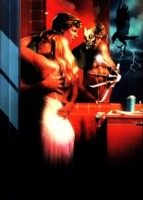 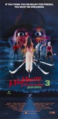 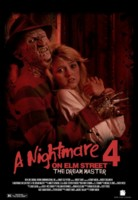
«Кошмары» под номерами 2, 3 и 4.
Съёмки, бюджет которых составил уже 3 миллиона долларов (что, впрочем, тоже было немного), заняли всего месяц. Сюжет был не лишён остроумия. Злой, мрачный и немногословный на почве пережитой неудачи Фредди меняет тактику. Вместо того чтобы преследовать свои жертвы в снах, он пытается завладеть телом молодого человека и совершать его руками убийства «в реале».
Сборы от проката нового фильма, выделяющегося среди прочих картин «Крюгеровского цикла» максимальным количеством убийств, составили 30 миллионов долларов. Чистая прибыль оказалась даже выше, чем от показа первых «Вязов». И это значило, что по законам рынка за сиквелом неизбежно последует триквел.
Несомненно, эта неизбежность была очевидна и Крэйвену. На этот раз он согласился писать сценарий. Но только при условии, что третья серия станет последней. Такое обещание ему было дано. Режиссёрскую работу взял на себя Чак Рассел («Стиратель»).
Фильм «Кошмар на улице Вязов 3» вышел в 1987 году. На этот раз действие было перенесено в психиатрическую лечебницу, где несколько подростков лечатся от нарушений сна. Фильм отличался от первых двух более качественными декорациями и спецэффектами (бюджет достиг уже 5 миллионов). В эпилоге Фредди получает контрольный выстрел: его бренные останки найдены и погружены в святую воду.
Теперь сборы достигли 44 миллионов долларов! И Фредди, конечно же, выжил снова. Святая вода не помогла. Уже в следующем году режиссёром Ренли Харлином («Скалолаз», «Крепкий орешек 2») создаётся четвёртый фильм — «Повелитель сна». Где Крюгер оживляется помочившейся на его могилу собачкой...
Дух новой картины заметно отличался от оригинала. По существу, это были уже не ужасы, а фантастический триллер, в котором Фредди мало пользуется перчаткой, но много говорит и шутит. Впервые были применены компьютерная графика и элементы модных в те годы боевиков «Кунг-фу». Фильм стоил уже 13 миллионов долларов.
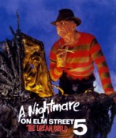 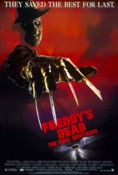 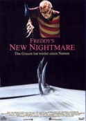
«Кошмары» под номерами 5, 6 и 7.
Сборы достигли рекордной отметки в 49 миллионов. В 1989 году пятых «Вязов» — «Дитя сна» — снял режиссёр Стивен Хопкинс («Хищник 2»). Сценарий предлагали писать Стивену Кингу, но в итоге его вариант был отвергнут.
В этот раз Фредди вселяется в не рождённого ещё младенца. Действовать из такой позиции ему неудобно, и потому убийств в фильме оказывается всего три. Но каких! Хопкинс стремился создать хоррор высшей пробы. Большую часть смачных подробностей ему, впрочем, пришлось вырезать — сам пугался.
Сборы, однако, уже падали. Только 35 миллионов дал и показ фильма «Кошмар на улице Вязов 6: Фредди мёртв», снятого в 1991 году Рэйчел Талалой по её же сценарию.
Фредди умирал. Попытки заставить его резаться в компьютерные игры и летать на метле лишь ускорили процесс разложения. Великий фильм ужасов мутировал в «чёрную» комедию. По-голливудски смешную и тупую.
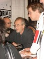 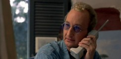
В заключительной (надо надеяться) седьмой серии эпопеи Уэс Крэйвен и Роберт Инглунд снялись в ролях самих себя.
Что, казалось бы, можно добавить к истории Фредди Крюгера, если он уже мёртв? Оказалось, кое-что можно. В 1994 году сам Уэс Крэйвен возвращается к теме и снимает в качестве режиссёра и сценариста седьмую часть, «Новый кошмар». Но это фильм уже не о Фредди-маньяке, а о Фредди — идоле поп-культуры. Фредди — символе. Фильм о фильме об очередных приключениях Крюгера.
На экране появляется съёмочная группа (во главе с самим Уэсом), жадные продюсеры, горемыка Инглунд, отождествившийся со своим персонажем наглухо, прямо как Сергей Селин — с Дукалисом. Фредди мёртв — собственно, он никогда и не жил, он — вымысел. Но некое древнее безымянное зло, демон из преисподней, прорывается в мир, приняв обличие самого знаменитого киноманьяка.
Во время съёмок началась мистика в полном соответствии с сюжетом. Воображаемое ворвалось в реальность. Ставились сцены землетрясения в Лос-Анджелесе... И город стало трясти! Мистика продолжилась и после премьеры. Фильм, явно обещавший быть незаурядным, фактически провалился, собрав только 18 миллионов долларов. Фредди оказался действительно мёртв и интересен лишь как легенда кинематографа.
Тем не менее, спустя почти 10 лет, в 2003 году была предпринята попытка реанимировать идею. Воскресить маньяка рискнул импортированный из Гонконга режиссёр Ронни Ю, снявший очередное продолжение «Фредди против Джейсона». По сюжету картины Крюгер пытается использовать для совершения преступлений Джейсона Вурхиса — другого почти столь же знаменитого голливудского убийцу.
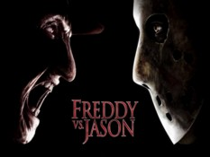 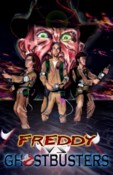
Вопреки поговорке, история повторяется далеко не дважды. Но фарса в эпилоге всё равно не избежать.
Собственно, это был фильм о том, как дерутся Фредди (в правом углу, шляпа и перчатка) и Джейсон (в левом углу, маска и тесак). В лучших традициях китайских боевиков дерутся они долго... очень долго. Порядка 40 минут, не считая перерыва на рекламу. Это всеголливудский рекорд продолжительности поединка. Больше ничего заслуживающего внимания на экране не происходит.
Конечно, получилась пародия на кино. Но создатели ленты подошли к работе творчески. Затратив 30 миллионов на спецэффекты, ещё почти столько же они вложили в рекламу. Сборы достигли отметки в 114 миллионов.
Последний раз прах Фредди потревожили в 2004 году, когда никому не известный режиссёр и сценарист Хэнк Брэкстен снял короткометражную комедию «Фредди против охотников за привидениями». Но это уже была «пародия на пародию». Успех фильм имел соответствующий.
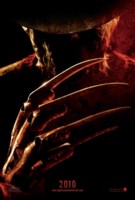
Фредди жив!
Наше досье
Кошмар на улице Вязов
A Nightmare on Elm Street
Производство: New Line Cinema, The Elm Street Venture, Media Home Entertainment
Жанр: Ужасы, триллер
Режиссёр: Уэс Крэйвен («И у холмов есть глаза», «Болотная тварь», «Крик», «Крик 2»)
Сценарий: Уэс Крэйвен
В ролях: Хезер Лэнгенкэмп, Рони Блейкли, Джон Сэксон, Аманда Уайсс, Роберт Инглунд
Продолжительность: 92 минуты
Возрастной рейтинг: R (лица до 17 лет допускаются на фильм только в сопровождении взрослых)
Бюджет: 1,8 миллиона долларов
Премьера: 9 ноября 1984 года
Роберт Инглунд снялся в 129 лентах. Но артисту нередко приходится поправлять коллег и знакомых, по привычке именующих его не Робертом, а Фредди.
За свою долгую и славную историю маньяк Крюгер принес своим создателем бездну денег и славы. И, видимо, был «выжат до капли». В каком-то смысле он устарел. Такие шляпы уже не носят даже маньяки.
Смириться с этой мыслью продюсеры ещё не готовы. Если продолжения невозможны, то почему бы не начать всё сначала, но на новом техническом уровне? В настоящий момент, уже для детей тех, кто в детстве содрогался при виде Фредди, снимается римейк первого «Кошмара на улице Вязов». Фильм выйдет в следующем году.
Режиссёр «Кошмара 1+» Сэмюэл Байер не знаменит, но консультантом фильма стал сам Уэс Крэйвен. Картина выделится из прочей «фреддиады» тем, что впервые роль Крюгера исполнит не Роберт Инглунд. «Заслуженный Фредди» уже слишком стар, чтобы размахивать лезвиями.